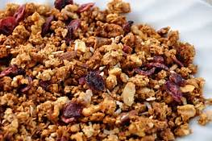
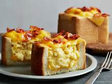

BREAKFAST
Our breakfast section!
Megans Granola

RECIPE
8 cups rolled oats
1 1/2 cups wheat germ
1 1/2 cups oat bran
1 cup sunflower seeds
1 cup finely chopped almonds
1 cup finely chopped pecans
1 cup finely chopped walnuts
1 1/2 teaspoons salt
1/2 cup brown sugar
1/4 cup maple syrup
3/4 cup honey
1 cup vegetable oil
1 tablespoon ground cinnamon
1 tablespoon vanilla extract
2 cups raisins or sweetened dried cranberries
1.Preheat the oven to 325 degrees F (165 degrees C). Line two large baking sheets with parchment or aluminum foil.
2.Combine the oats, wheat germ, oat bran, sunflower seeds, almonds, pecans, and walnuts in a large bowl. Stir together the salt, brown sugar, maple syrup, honey, oil, cinnamon, and vanilla in a saucepan. Bring to a boil over medium heat, then pour over the dry ingredients, and stir to coat. Spread the mixture out evenly on the baking sheets.
3.Bake in the preheated oven until crispy and toasted, about 20 minutes. Stir once halfway through. Cool, then stir in the raisins or cranberries before storing in an airtight container.
Bacon,Cheese Egg Bread Box Recipe

RECIPE
1 loaf unsliced white bread (preferably Pullman), about 10-inches long
6 tablespoons unsalted butter
Kosher salt and freshly ground black pepper
8 slices American cheese
8 slices bacon, sliced in to 1/2-inch pieces
1/3 cup whole milk
12 large eggs
Hot sauce, for serving
Position an oven rack in the center of the oven and preheat to 375 degrees F.
Remove 1/4 inch of the crust from the ends of the loaf, then cut the loaf crosswise into 4 even pieces. Use a fork to score one cut end and gently dig a square hole into each piece of bread to make a box, leaving a 1/2-inch layer of bread around the walls and bottom (see Cook's Note). Save the removed crumbs for another use.
Microwave the butter and a large pinch of salt in a small microwave-safe bowl until melted, about 1 minute. Brush the bread boxes inside and out with the melted butter. Put 1 slice of cheese at the bottom of each bread box. Put the boxes open-side up on a baking sheet and bake until the cheese melts and the inside of the bread is lightly browned and crispy in parts, about 10 minutes.
Meanwhile, heat a large non-stick skillet over medium heat and add the bacon. Cook, stirring occasionally, until the bacon is crispy, 12 to 15 minutes. Use a slotted spoon to transfer the bacon onto a paper-towel lined plate. Reserve the bacon fat in the skillet and adjust the heat to low. Whisk the milk and eggs with a large pinch of salt and pepper and add to the skillet. Continue stirring the eggs, scraping the sides of the skillet as needed, until small curds form and the eggs are just set, 6 to 8 minutes.
Divide the hot eggs between the 4 boxes and top with the remaining cheese. Return to the oven and bake until the cheese is melts, about 5 minutes. Top with the crispy bacon and serve hot with hot sauce and additional salt and pepper.
Bacon and Egg Tacos

6 eggs
1/4 cup crumbled cooked bacon
2 tablespoons butter
3 slices American cheese
1/4 teaspoon salt Morton Salt, 26 Oz
Whisk eggs together in a bowl; stir in bacon.
Melt butter in a skillet over medium heat. Add egg mixture; cook and stir until eggs are completely set, 2 to 3 minutes. Stir in American cheese, salt, and pepper.
Wrap tortillas in damp paper towels; microwave until warmed through, 30 seconds to 1 minute.
Spoon 1/4 cup egg mixture into the center of each tortilla; fold sides to cover. Serve with salsa.
French Egg and Bacon Sandwich
2 eggs, beaten
4 slices bread
4 slices bacon
2 eggs 1/2 cup maple syrup
Dip bread slices in beaten eggs. Heat a lightly oiled griddle or frying pan over medium high heat. Cook until browned on both sides.
Set aside but keep warm.
Place bacon in a large, deep skillet. Cook over medium high heat until evenly brown. Drain and set aside. Reserve 1 tablespoon of bacon grease in pan and fry remaining two eggs.
Place one piece of French toast on each of two plates. Place the fried eggs on top of the bread, top the eggs with strips of bacon. Cover with the remaining pieces of French toast. Following that by pouring on the syrup.
The Breakfast Omwich
3 slices bacon 3 eggs lightly beaten
1/2 cup grated Cheddar cheese
1 pinch salt and ground black pepper to taste (optional) 2 slices cooked, chopped ham 1/4 cup finely chopped onion (optional) 1 tablespoon fresh chives, chopped (optional) 1/4 cup chopped fresh mushrooms (optional) 1/4 cup green bell pepper, finely chopped (optional) 1 teaspoon finely chopped jalapeno pepper (optional) 2 drops hot pepper sauce (e.g. Tabasco™), or to taste (optional) 4 slices bread, toasted 2 tablespoons mayonnaise, or to taste (optional)
Place the bacon in a skillet and cook over medium heat until evenly browned and crisp. Remove, and drain on paper towels. When cooled, crumble into small pieces.
Stir the eggs and 1/4 cup Cheddar cheese together in a bowl until blended. Season to taste with salt and pepper. Pour the egg mixture into a skillet over medium heat. When the bottom of the eggs is set, layer with the bacon, ham, and if using, onion, chives, mushrooms, green pepper, jalapeno or hot pepper sauce.
Season with hot pepper sauce, if desired. Sprinkle with the remaining 1/4 cup Cheddar cheese. Carefully fold one half of the egg mixture over the filling ingredients. Cook until the cheese melts and the bottom is golden; turn and cook the other side until golden. Remove from the heat.
Set two slices of toast on two serving plates, and spread each slice with mayonnaise, if desired. Cut the egg mixture in half, and place one half on each piece of toast. Top each with the remaining toast, cut each omwich in half, and serve immediately.
Breakfast SPAM®adillas

1/2 cup diced SPAM® with Bacon
3 eggs
2 teaspoons water
2 large flour tortillas
3 tablespoons your favorite salsa
1/2 cup shredded Colby-Jack cheese
Heat a skillet over high heat; add SPAM(R) with Bacon, reduce heat to medium and cook and stir until SPAM(R) with Bacon starts to brown, 2 to 5 minutes.
While SPAM(R) with Bacon is browning, crack eggs into a bowl, add water and whisk thoroughly with a fork.
Reduce heat to low; pour eggs into skillet. Cook and stir lightly until eggs are set.
Remove SPAM(R) with Bacon mixture from skillet.
Turn heat up to medium and place first tortilla into skillet. Top with SPAM(R) with Bacon mixture, salsa, and Colby-Jack cheese.
Top with remaining tortilla. Cook until bottom tortilla starts to brown; flip carefully. Continue cooking on the other side until the cheese melts and tortilla starts to brown, about 5 minutes per side.
LUNCH
Our lunch section!
Lunch Biscuits

cooking spray
1 cup shredded Cheddar cheese
1/2 cup chopped ham
1 (10 ounce) can refrigerated buttermilk biscuit dough, each cut into small pieces 2 tablespoons pizza sauce
Preheat oven to 375 degrees F (190 degrees C). Spray 8 muffin cups with cooking spray.
Mix Cheddar cheese and ham together in a bowl; fold in biscuit dough pieces. Add pizza sauce and lightly mix. Spoon mixture into the prepared muffin cups.
Bake in the preheated oven until biscuits are puffed and browned, about 20 minutes. Cool for 10 minutes before removing from muffin cups.
Lunch Box Hot Hot Dogs

1 all-beef hot dog
1 hot dog bun
1 packet ketchup
1 packet prepared yellow mustard
2 tablespoons shredded Cheddar cheese
Prepare your child's lunch box by packing the hot dog bun, ketchup, mustard and Cheddar cheese.
Preheat your child's insulated beverage container by filling with boiling water. Let stand for 15 to 20 minutes. I put the kettle on when I get up and let it heat while the kids get ready for school.
Right before they leave, dump out that water and replace with more boiling water. The preheating keeps it hot for a longer time. Place a hot dog into the water and close the lid.
When your child is ready for lunch, they can take the hot hot dog out of the container and place it on the bun. Top with ketchup, mustard and cheese to make a hot lunch from home.
Taco in a Bag

1/4 cup refrigerated taco sauce with seasoned ground beef (from 18-oz container)
1 bag (1 oz) nacho-flavored tortilla chips
2 tablespoons finely shredded Mexican cheese blend
2 tablespoons shredded lettuce
In small microwavable bowl, microwave ground beef on High 30 seconds or until thoroughly heated. Squeeze bag of chips to crush slightly.
Cut bag of chips open along top; hold open. Top chips with warm ground beef; mix with fork. Top with cheese, lettuce and if desired, other taco toppings. Eat directly from bag.
Mediterranean Chicken-Pasta Salad

1 box Betty Crocker™ Suddenly Salad® basil pesto pasta salad mix
1/3 cup water
3 tablespoons olive oil
2 cups cut-up cooked chicken
1 cup cherry or grape tomatoes
1 cup cucumber, coarsely chopped
4 oz crumbled feta cheese (1 cup)
1 can (2 1/4 oz) sliced ripe olives, drained
1 box Betty Crocker™ Suddenly Salad® basil pesto pasta salad mix
1.Cook pasta as directed on box. Meanwhile, in large bowl, stir together seasoning mix, cold water and oil. Add chicken; let stand while pasta is cooking.
2. Drain pasta; rinse with cold water. Shake to drain well.
3. Stir drained pasta and remaining ingredients into chicken mixture. Refrigerate at least 1 hour before serving. Cover and refrigerate any remaining salad.
Ranch Chicken

4 boneless skinless chicken breast halves (1 lb)
1/4 cup ranch dressing
1/3 cup Progresso™ dry bread crumbs (any flavor)
2 tablespoons olive or vegetable oil
1.Dip chicken into dressing, then coat with bread crumbs.
2. In 10-inch skillet, heat oil over medium-high heat.
Cook chicken in oil 12 to 15 minutes, turning once, until outside is golden brown and juice is no longer pink when centers of thickest pieces are cut.
Pizza Biscuit Bake

3 1/3 cups Original Bisquick™ mix
1 cup milk
2 cans (8 oz each) pizza sauce (2 cups)
1 package (8 oz) sliced pepperoni
2 cups shredded mozzarella cheese (8 oz)
1.Heat oven to 375°F. Spray 13x9-inch (3-quart) glass baking dish with cooking spray.
2. In medium bowl, stir Bisquick mix and milk until soft dough forms. Drop half of dough by spoonfuls evenly over bottom of baking dish (dough will not completely cover bottom of dish). Drizzle 1 can pizza sauce over dough. Scatter half of the pepperoni over sauce. Top with 1 cup of the cheese. Repeat layers with remaining dough, pizza sauce, pepperoni and cheese.
3. Bake 20 to 25 minutes or until golden brown.